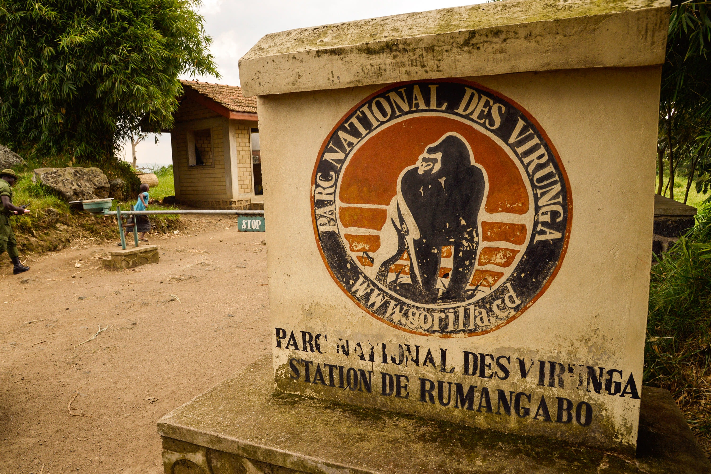
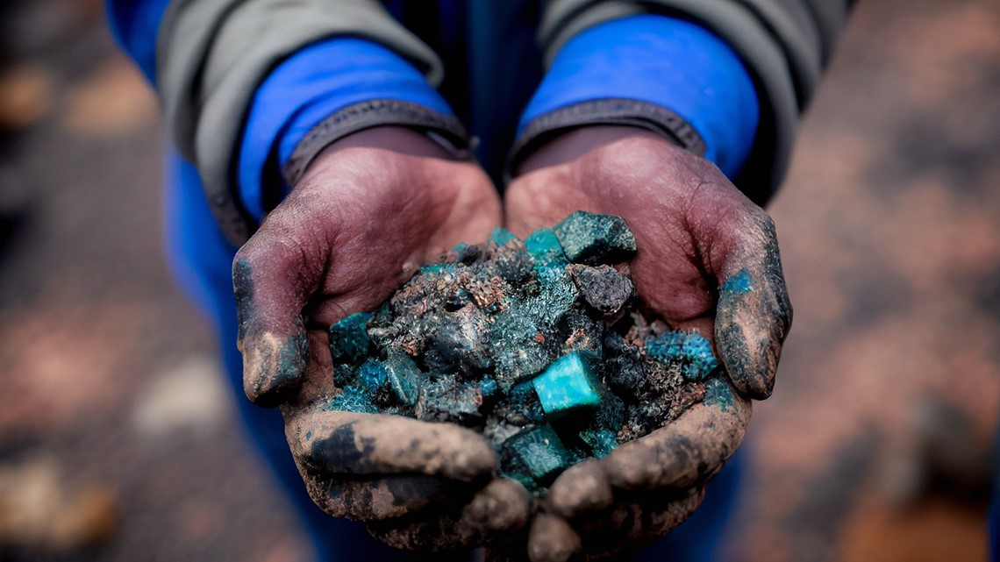

The DRC is one of the most biodiverse places on Earth. It houses Virunga National Park, Africa's oldest national park, and is the exclusive home of unique wildlife such as the Okapi (a relative of the giraffe) and the Bonobo. The massive Congo Rainforest plays a crucial role in absorbing global carbon dioxide emissions, making it vital in combating climate change.

The DRC is central to the world's transition to renewable energy. It possesses vast reserves of cobalt and lithium—essential minerals used in electric vehicle batteries and green technology. Additionally, the Congo River offers enough hydropower potential via projects like the Grand Inga Dam to power a significant portion of the African continent.

Beyond minerals and energy, the DRC contains millions of hectares of fertile land and abundant water supply. With sustainable investment, the country has the potential not only to feed its population of over 100 million people, but also to become a major agricultural exporter for the rest of Africa.
Learn more about Congolese agriculture here.